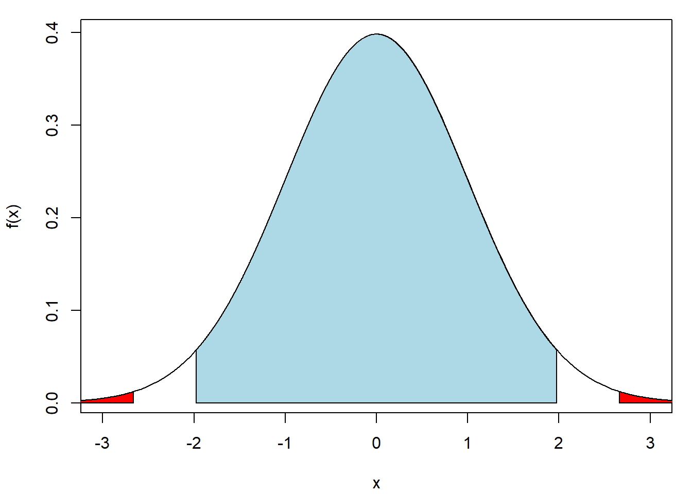
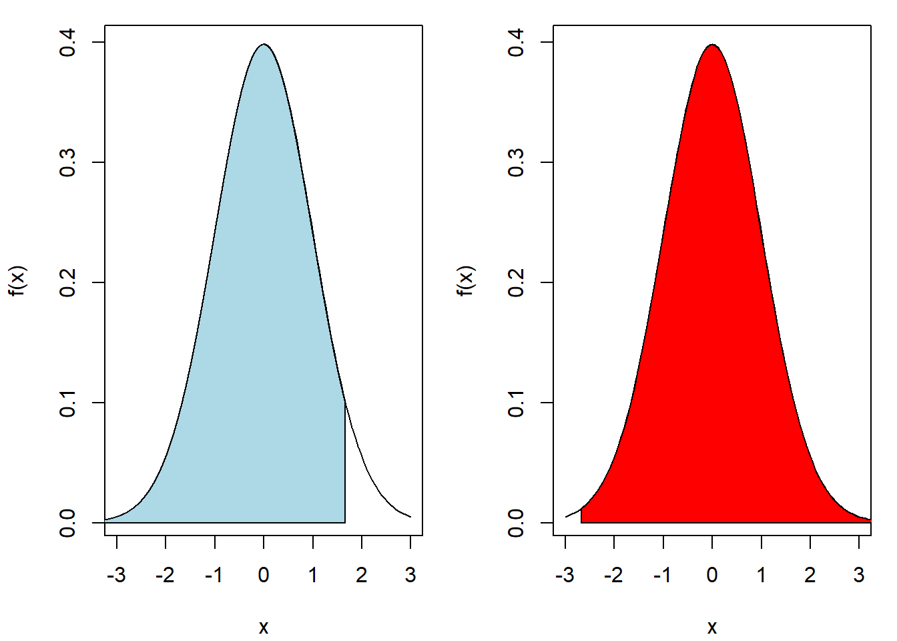
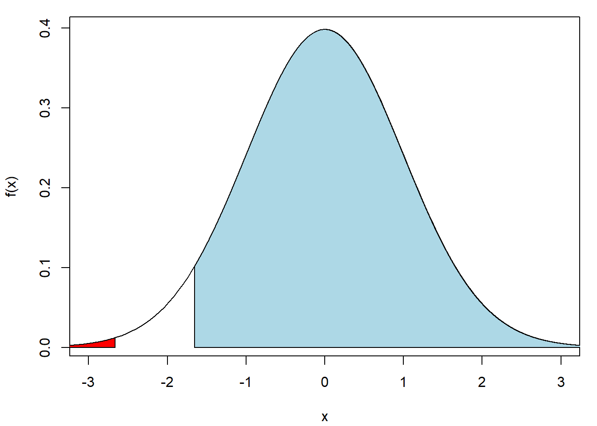

Komplement till Slides i Statistik
1 Föreläsning 3
1.1 Ju starkare effekten är, desto större blir testets styrka
Det står på sidan 23 av sliden till föreläsning 3 att ju starkare effekten är, desto större blir testets styrka. Om vi testar \[\begin{eqnarray*}
\text{H0: det finns ingen skillnad}
\end{eqnarray*}\] innebär det att strykan är större om skillnaden är större. Vi kan genomföra en simuleringsstudie för att bevisa detta. Till exempel, jag vill testar \[\begin{eqnarray*}
\text{H0: det finns ingen skillnad mellan väntevärdena av två oberoende grupper}
\end{eqnarray*}\] mot \[\begin{eqnarray*}
\text{H1: det finns en skillnad mellan väntevärdena.}
\end{eqnarray*}\] Jag simulerar \(n=100\) observationer från slumpvariabeln \(X \sim N(0, 1)\) och \(n=100\) observationer från slumpvariabeln \(Y \sim N(\mu, 1)\). Skillnaden i väntevärde mellan grupperna är \[\begin{eqnarray*}
\text{E}(X) - \text{E}(Y) & = & -\mu.
\end{eqnarray*}\] T-testet kan används för att testa skillnaden. Jag jämför p-värdet med signifikansnivå 0.05. Jag kan upprepa simuleringen \(10 000\) gånger. Resultatet sparas i vektorn Signifikant. Om \(\text{Signifikant[i]}=1\) innebär att den i:e simuleringen ledar till ett signifikant resultat (p-värdet < 0.05). Annars \(\text{Signifikant[i]}=0\).
Mu <- 0.1 # Väntevärdet av Y
Signifikant <- numeric(10000)
for(i in 1 : 10000){
## Simulera X och Y
X <- rnorm(n = 100, mean = 0, sd = 1)
Y <- rnorm(n = 100, mean = Mu, sd = 1)
## Genomföra t test
test <- t.test(X, Y)
## Obtain p-value
Pvalue <- test$p.value
## Jämföra p-värdet med signifikansnivå 0.05
Signifikant[i] <- (Pvalue <= 0.05)
}Styrkan hos ett statistiskt hypotestest är sannolikheten att förkasta H0 om H1 är sann. I exempelet ovan är H1 sann eftersom \(\mu = 0.1\), alltså det finns en skillnad mellan grupperna. Vi kan därför uppskatta styrkan genom mean(Signifikant), dvs andelen signifikanta resultat i vår simulering:
mean(Signifikant)[1] 0.1072Nu ökar jag \(\mu=0.1\) till \(\mu=0.25\) och genomför simuleringen igen.
Mu <- 0.25 # Väntevärdet av Y
Signifikant <- numeric(10000)
for(i in 1 : 10000){
## Simulera X och Y
X <- rnorm(n = 100, mean = 0, sd = 1)
Y <- rnorm(n = 100, mean = Mu, sd = 1)
## Genomföra t test
test <- t.test(X, Y)
## Obtain p-value
Pvalue <- test$p.value
## Jämföra p-värdet med signifikansnivå 0.05
Signifikant[i] <- (Pvalue <= 0.05)
}Skattningen av strykan blir
mean(Signifikant)[1] 0.4247vilket är större än strykan när \(\mu = 0.1\).
Om jag ökar \(\mu=\) till \(\mu=1\) skulle jag får en ännu större styrka. Vi kan kolla om det stämmer.
Mu <- 1 # Väntevärdet av Y
Signifikant <- numeric(10000)
for(i in 1 : 10000){
## Simulera X och Y
X <- rnorm(n = 100, mean = 0, sd = 1)
Y <- rnorm(n = 100, mean = Mu, sd = 1)
## Genomföra t test
test <- t.test(X, Y)
## Obtain p-value
Pvalue <- test$p.value
## Jämföra p-värdet med signifikansnivå 0.05
Signifikant[i] <- (Pvalue <= 0.05)
}Skattningen av strykan blir
mean(Signifikant)[1] 1Vi kan nästan alltid upptäcka en skillnad mellan grupperna!
2 Föreläsning 4
Jag kommer att förklara hur man beräknar p-värdet för t-testet här. Ta vikten hos adeliepinviner som exempel.
library(palmerpenguins)
Adelie <- subset(penguins, species == "Adelie")
vikt <- na.omit(Adelie$body_mass_g)Anta att signifikansnivån är \(\alpha = 0.05\).
2.1 H0: \(\mu = 3800 \text{gram}\) mot H1: \(\mu \neq 3800 \text{gram}\)
Vi börjar med att testa H0: \(\mu = 3800 \text{gram}\) mot H1: \(\mu \neq 3800 \text{gram}\). Den standardiserade differensen mellan medelvikt och 3800 gram är \[\begin{eqnarray} t & = & \frac{\bar{x} - 3800}{s / \sqrt{n}}, \end{eqnarray}\] där \(\bar{x}\) är medelvikt som vi beräknar från data, och \(s / \sqrt{n}\) är standardfel. Sådan standardiserad differens mäter skillnaden mellan data och vår H0.
- Om \(t\) är mycket större än 0 innebär att vår data tyder på att medelvikten är större än H0.
- Om \(t\) är mycket mindre än 0 innebär att vår data tyder på att medelvikten är mindre än H0.
När vi använder t.test() för att testa H0 mot H1 ovan får vi resultatet
t.test(vikt, mu = 3800)
One Sample t-test
data: vikt
t = -2.662, df = 150, p-value = 0.008616
alternative hypothesis: true mean is not equal to 3800
95 percent confidence interval:
3626.926 3774.398
sample estimates:
mean of x
3700.662 \(t = -2.662\) är den standardiserade skillnaden som vi kan beräkna från vår data. Vi måste bestämma om detta t-värde avviker tillräckligt från H0. Om data är normalfördelade och H0 stämmer följer \(t\) en t-fördelning med frihetsgrader \(n - 1\). Det betyder att \(100(1 - \alpha)%\) av alla studier skulle ge \(-t_{\alpha/2}^{(n-1)} < t < t_{\alpha/2}^{(n-1)}\) om vi kan upprepa samma studie många gånger. I vårt exempel är frihetsgraderna 150 (eftersom vi har \(151\) observationer) och \(t_{\alpha/2}^{(n-1)} = 1.975799\):
qt(p = 1 - 0.05 / 2, df = 151 - 1)[1] 1.975905Det innebär att ett t-värde som ligger mellan \(-1.975905\) och \(1.975905\) anses vara helt “normalt” om H0 är sann. Om t-värdet ligger utanför \((-1.975905, 1.975905)\) anses vår data “konstiga” under H0. Det vill säga, om absolutbeloppet av \(t\) är stort tyder det på att H0 inte stämmer. P-värdet defineras som sannolikheten att få ett resultat som är “minst lika extremt” som det observerade, om H0 är sann. I vårt exempel betyder “minst lika extremt” att absolutbeloppet av den standardiserade differensen \(t = \frac{\bar{x} - 4000}{s / \sqrt{n}}\) är större eller lika med absolutebeloppet av \(t = -2.662\), t-värdet som vi beräknar från data. Därför beräknar vi p-värdet som \[\begin{eqnarray} P\left( \left| \frac{\bar{x} - 3800}{s / \sqrt{n}} \right| \geq \left| -2.662 \right| \right) & = & P\left( \frac{\bar{x} - 3800}{s / \sqrt{n}} \leq -2.662 \right) + P\left( \frac{\bar{x} - 3800}{s / \sqrt{n}} \geq 2.662 \right) \end{eqnarray}\]
pt(q = -2.662, df = 151 - 1) +
(1 - pt(q = 2.662, df = 151 - 1))[1] 0.008614753P-värdet avviker lite eftersom R använder fler decimaler för \(t\).
Jag kan rita täthetsfunktionen av t-fördelningen. P-värdet är egentligen den röda ytan under kurvan. Den blåa ytan motsvarar en “normal” standardiserade differens.

Från resultatet av t.test() står det att “95 percent confidence interval: 3626.926, 3774.398”. Det betyder att \(95\%\) konfidensintervallet för medelviken \(\mu\) är \(3626.926 < \mu < 3774.398\). Nullhypotesen är H0: \(\mu = 3800\). Om sådan \(3800\) ingår i konfidensintevallet tyder på att H0 stämmer vid 5% signifikansnivå. Annars förkastar vi H0.
Vi kan även ser resultatet “sample estimates: mean of x 3700.662” från t.test(). Det betyder medelvärdet av våra data är 3700.662:
mean(vikt)[1] 3700.662Du får inte jämföra medelvärdet med konfidensintervallet för att bestämma om H0 stämmer. Värför det? Stickprovs medelvärde ligger alltid i konfidensintervallet! För att testa H0 använder vi det antagna värdet i H0, dvs 3800 i vårt exempel.
2.2 H0: \(\mu \leq 3800 \text{gram}\) mot H1: \(\mu > 3800 \text{gram}\)
Nu ändrar vi H0 till ensidighypotesen H0: \(\mu \leq 3800 \text{gram}\). Den standardiserade differensen mellan medelvikt och 3800 gram är forfarande \[\begin{eqnarray} t & = & \frac{\bar{x} - 3800}{s / \sqrt{n}}. \end{eqnarray}\]
- Om \(t\) är mycket större än 0 innebär att vår data tyder på att medelvikten är större än 3800, den antagna värdet i H0.
- Om \(t\) är mycket mindre än 0 innebär att vår data tyder på att medelvikten är mindre än 3800.
När vi använder t.test() för att testa H0 mot H1 ovan får vi resultatet
t.test(vikt, mu = 3800, alternative = "greater")
One Sample t-test
data: vikt
t = -2.662, df = 150, p-value = 0.9957
alternative hypothesis: true mean is greater than 3800
95 percent confidence interval:
3638.899 Inf
sample estimates:
mean of x
3700.662 \(100(1 - \alpha)%\) av alla studier skulle ge \(t < t_{\alpha}^{(n-1)}\) om vi kan upprepa samma studie många gånger. I vårt exempel är frihetsgraderna 150 (eftersom vi har \(151\) observationer) och \(t_{\alpha}^{(n-1)} = 1.655076\):
qt(p = 1 - 0.05, df = 151 - 1)[1] 1.655076Det innebär att ett t-värde som ligger mellan \(-Inf\) och \(1.655076\) anses vara helt “normalt” om H0 är sann. Om t-värdet ligger utanför \((-Inf, 1.655076)\) anses våra data “konstiga” under H0. Det vill säga, om \(t\) är stort tyder det på att H0 inte stämmer. I vårt exempel betyder “minst lika extremt” att den standardiserade differensen \(t = \frac{\bar{x} - 4000}{s / \sqrt{n}}\) är större eller lika med \(t = -2.662\), t-värdet som vi beräknar från data. Därför beräknar vi p-värdet som \[\begin{eqnarray} P\left( \frac{\bar{x} - 3800}{s / \sqrt{n}} \geq -2.662 \right) & \end{eqnarray}\]
1 - pt(q = -2.662, df = 151 - 1)[1] 0.9956926P-värdet avviker lite eftersom R använder fler decimaler för \(t\).
Jag kan rita täthetsfunktionen av t-fördelningen. P-värdet är egentligen den röda ytan under kurvan. Den blåa ytan motsvarar en “normal” standardiserade differens.

Från resultatet av t.test() står det att “95 percent confidence interval: 3626.926, 3774.398”. Det betyder att \(95\%\) konfidensintervallet för medelviken \(\mu\) är \(3626.926 < \mu < 3774.398\). Nullhypotesen är H0: \(\mu = 3800\). Om sådan \(3800\) ingår i konfidensintevallet tyder på att H0 stämmer vid 5% signifikansnivå. Annars förkastar vi H0.
Vi kan även ser resultatet “sample estimates: mean of x 3700.662” från t.test(). Det betyder medelvärdet av våra data är 3700.662:
mean(vikt)[1] 3700.662Du får inte jämföra medelvärdet med konfidensintervallet för att bestämma om H0 stämmer. Värför det? Stickprovs medelvärde ligger alltid i konfidensintervallet! För att testa H0 använder vi det antagna värdet i H0, dvs 3800 i vårt exempel.
2.3 H0: \(\mu \geq 3800 \text{gram}\) mot H1: \(\mu < 3800 \text{gram}\)
Nu ändrar vi H0 till ensidighypotesen H0: \(\mu \geq 3800 \text{gram}\). Den standardiserade differensen mellan medelvikt och 3800 gram är forfarande \[\begin{eqnarray} t & = & \frac{\bar{x} - 3800}{s / \sqrt{n}}. \end{eqnarray}\]
- Om \(t\) är mycket större än 0 innebär att vår data tyder på att medelvikten är större än 3800, den antagna värdet i H0.
- Om \(t\) är mycket mindre än 0 innebär att vår data tyder på att medelvikten är mindre än 3800.
När vi använder t.test() för att testa H0 mot H1 ovan får vi resultatet
t.test(vikt, mu = 3800, alternative = "less")
One Sample t-test
data: vikt
t = -2.662, df = 150, p-value = 0.004308
alternative hypothesis: true mean is less than 3800
95 percent confidence interval:
-Inf 3762.426
sample estimates:
mean of x
3700.662 \(100(1 - \alpha)%\) av alla studier skulle ge \(t > t_{1 - \alpha}^{(n-1)}\) om vi kan upprepa samma studie många gånger. I vårt exempel är frihetsgraderna 150 (eftersom vi har \(151\) observationer) och \(t_{1 - \alpha}^{(n-1)} = -1.655076\):
qt(p = 0.05, df = 151 - 1)[1] -1.655076Det innebär att ett t-värde som ligger mellan \(-1.655076\) och Inf anses vara helt “normalt” om H0 är sann. Om t-värdet ligger utanför \((-1.655076, Inf)\) anses våra data “konstiga” under H0. Det vill säga, om \(t\) är stort tyder det på att H0 inte stämmer. I vårt exempel betyder “minst lika extremt” att den standardiserade differensen \(t = \frac{\bar{x} - 4000}{s / \sqrt{n}}\) är större eller lika med \(t = -2.662\), t-värdet som vi beräknar från data. Därför beräknar vi p-värdet som \[\begin{eqnarray} P\left( \frac{\bar{x} - 3800}{s / \sqrt{n}} \geq -2.662 \right) & \end{eqnarray}\]
pt(q = -2.662, df = 151 - 1)[1] 0.004307377P-värdet avviker lite eftersom R använder fler decimaler för \(t\).
Jag kan rita täthetsfunktionen av t-fördelningen. P-värdet är egentligen den röda ytan under kurvan. Den blåa ytan motsvarar en “normal” standardiserade differens.

Från resultatet av t.test() står det att “95 percent confidence interval: -Inf 3762.426”. Det betyder att \(95\%\) konfidensintervallet för medelviken \(\mu\) är \(\mu < 3762.426\). Nullhypotesen är H0: \(\mu = 3800\). Om sådan \(3800\) ingår i konfidensintevallet tyder på att H0 stämmer vid 5% signifikansnivå. Annars förkastar vi H0.
Vi kan även ser resultatet “sample estimates: mean of x 3700.662” från t.test(). Det betyder medelvärdet av våra data är 3700.662:
mean(vikt)[1] 3700.662Du får inte jämföra medelvärdet med konfidensintervallet för att bestämma om H0 stämmer. Värför det? Stickprovs medelvärde ligger alltid i konfidensintervallet! För att testa H0 använder vi det antagna värdet i H0, dvs 3800 i vårt exempel.